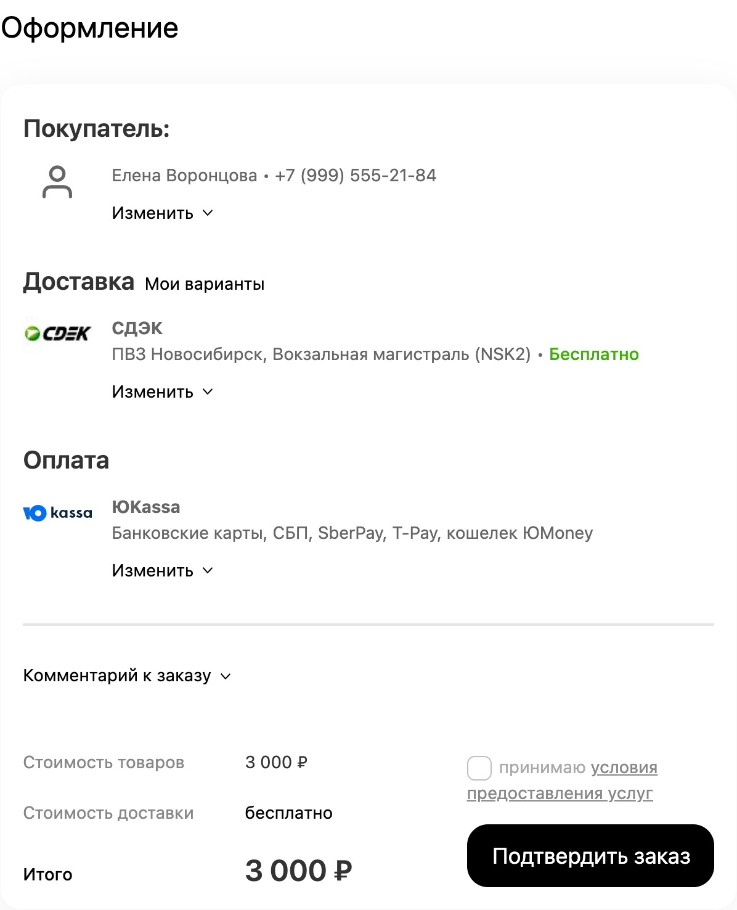
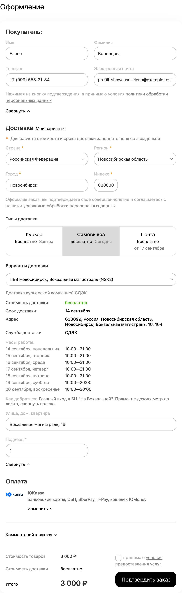
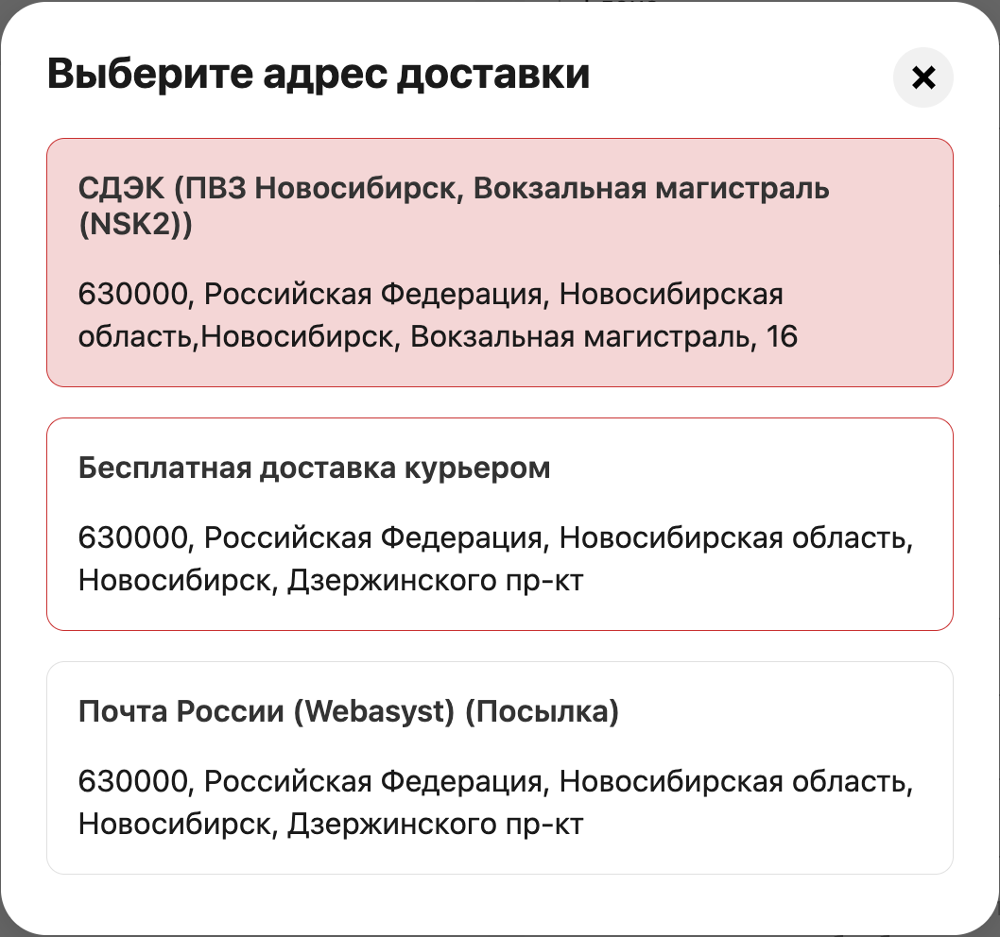
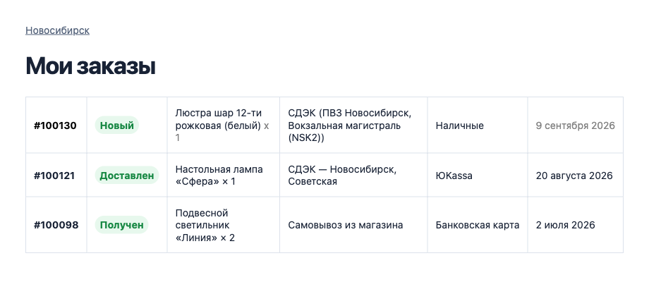

+45%
Больше завершённых оформлений
В материале Google от декабря 2024 года: в тестах Shopify конверсия гостевого оформления заказа была на 45% выше с автозаполнением.
Контакты, адрес, доставка и оплата уже в форме оформления заказа. Дзен-режим оставляет на экране только главное — покупатель сразу переходит к подтверждению заказа.

В материале Google от декабря 2024 года: в тестах Shopify конверсия гостевого оформления заказа была на 45% выше с автозаполнением.
Исследование Chrome 2024 года в США: по данным тысяч популярных сайтов пользователи с автозаполнением тратили на форму оформления заказа в среднем на 35% меньше времени.
Адрес и доставка уже на месте — как при повторном заказе на Ozon или Wildberries.
Источник — публикация команды Google Chrome от 20 декабря 2024 года. Данные Chrome агрегированы по согласившимся пользователям и тысячам популярных сайтов США; 45% — результат тестов Shopify. Это ориентир, а не обещание прироста после установки. Открыть исследование.
Плагин заранее сохранил авторизацию и нашёл данные предыдущего заказа.
Контакты, адрес, доставка и оплата уже заполнены. Если прежний вариант недоступен, плагин сообщит об этом и предложит другой — в том числе из сохранённых адресов.
Форма оформления заказа не отвлекает в решающий момент: покупатель видит главное и нажимает «Подтвердить заказ» — как на маркетплейсе.
Покупатель видит только то, что нужно проверить перед заказом. Остальные данные уже заполнены и собраны в понятную сводку.
Автозаполнение
Покупателю не нужно снова вводить имя, телефон, адрес и выбирать прежний способ получения.

Дзен-режим
Заполненные разделы сворачиваются в понятную сводку. Всё видно, всё можно изменить, ничего лишнего не отвлекает.
Мои варианты доставки
Авторизованный покупатель выбирает сохранённый вариант из прошлых заказов — без повторного поиска адреса или пункта на карте.

Постоянная авторизация
Плагин может сохранить авторизацию после оформления заказа. При следующем визите покупателю не нужно снова входить в аккаунт: история заказов доступна, а оформление уже заполнено.
Функция включается в настройках и работает, когда авторизация покупателей и «Запомнить меня» разрешены в Shop-Script.

Возможности, которые остаются за кадром основного сценария, но помогают магазину работать точнее.
Данные можно использовать при следующем визите в том же браузере. По умолчанию сохранение требует согласия покупателя.
Ручной ввод всегда важнее истории: изменённые или удалённые покупателем данные плагин не возвращает обратно.
Передаёт город последнего заказа в CitySelect, «SEO-регионы» и «Доставку и платежи» вместо неточного определения по IP.
В Дзен-сводке могут остаться сроки, адрес и расписание ПВЗ, фотографии, описание доставки и дополнительные поля.
Общие шаблоны можно заменить персональными для конкретной доставки или оплаты и сразу проверить в предпросмотре.
Отдельно включайте заполнение данных покупателя, доставки, оплаты и подтверждения заказа.
Если сохранённый вариант больше не подходит заказу, покупатель увидит понятное предложение выбрать другой.
Функции, тексты, шаблоны, иконки, цвета и CSS можно настраивать отдельно для разных витрин магазина.
Работает со стандартным оформлением заказа Shop-Script. После установки всё настраивается в привычной админке; изменять шаблоны темы не требуется. Плагин подключается только на странице оформления заказа и не затрагивает каталог.
Заказ в один клик со страницы товара и более ранняя подготовка данных постоянного покупателя ещё до перехода в корзину.
Выбор пункта выдачи в любом месте сайта, пожелания «Оставить у двери» и «Позвонить перед доставкой», вариант оплаты после получения.
Связь с фильтрами доставки и оплаты, расширенная синхронизация города между витринами и полезные бейджи в свёрнутых разделах.
Это направления развития, а не функции текущей версии. Состав и порядок реализации могут измениться.